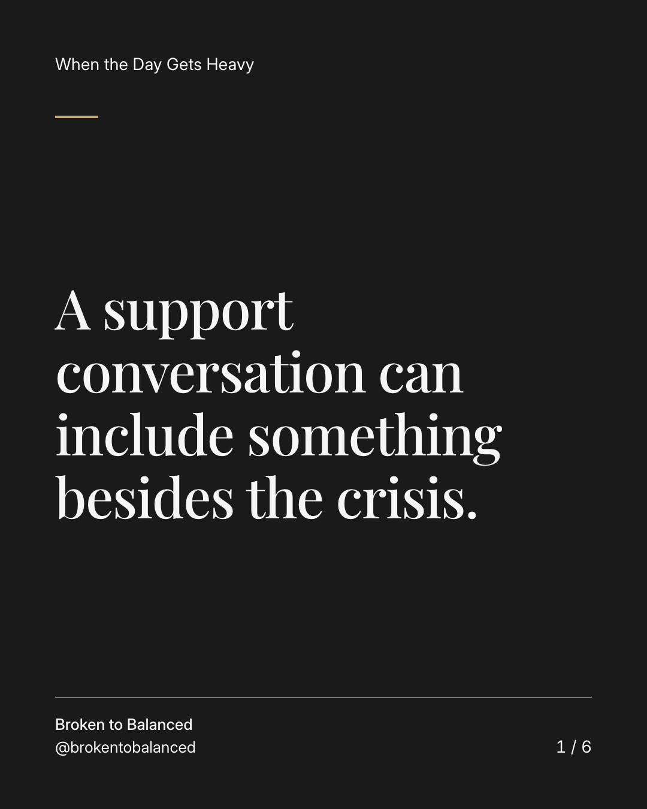
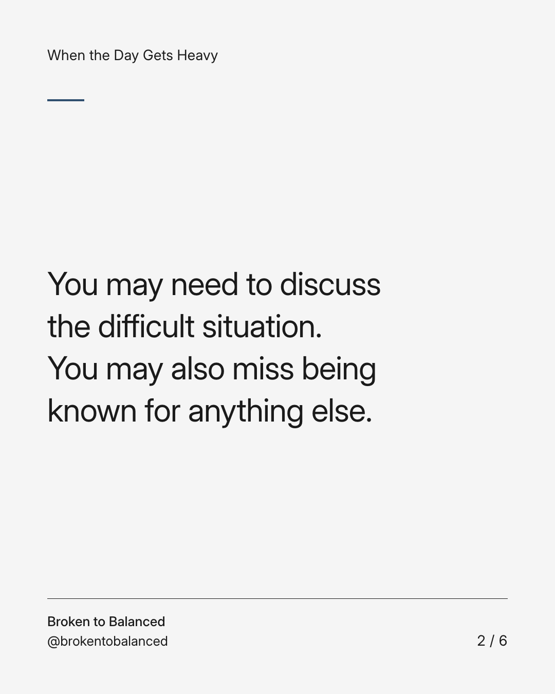
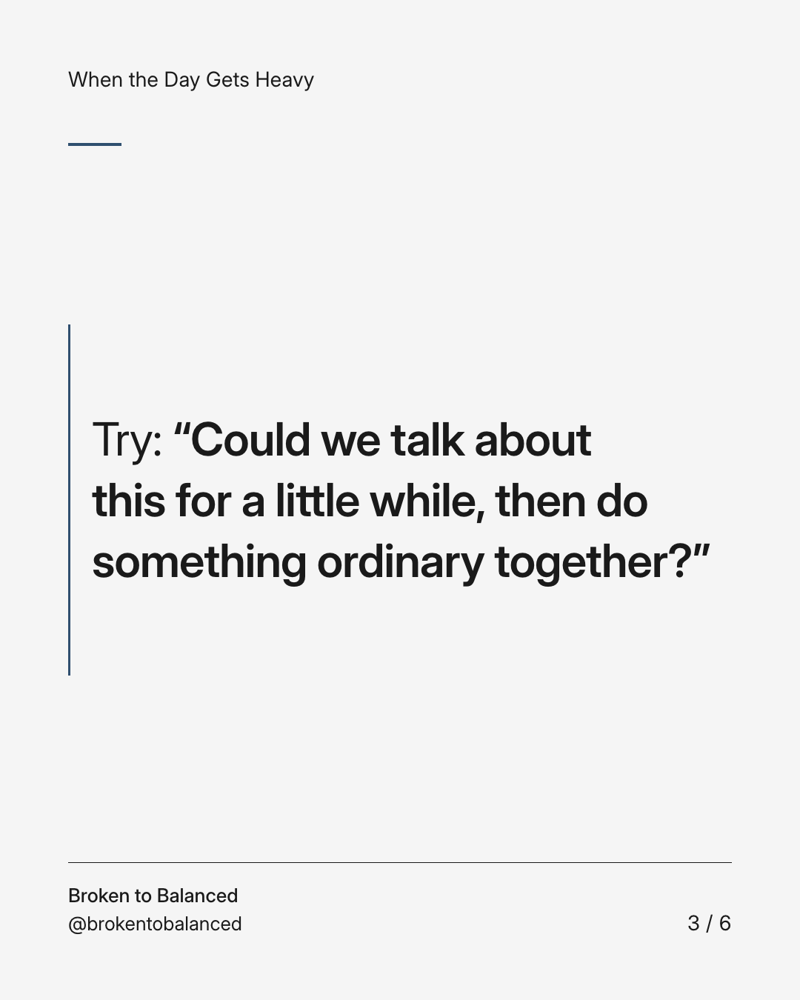
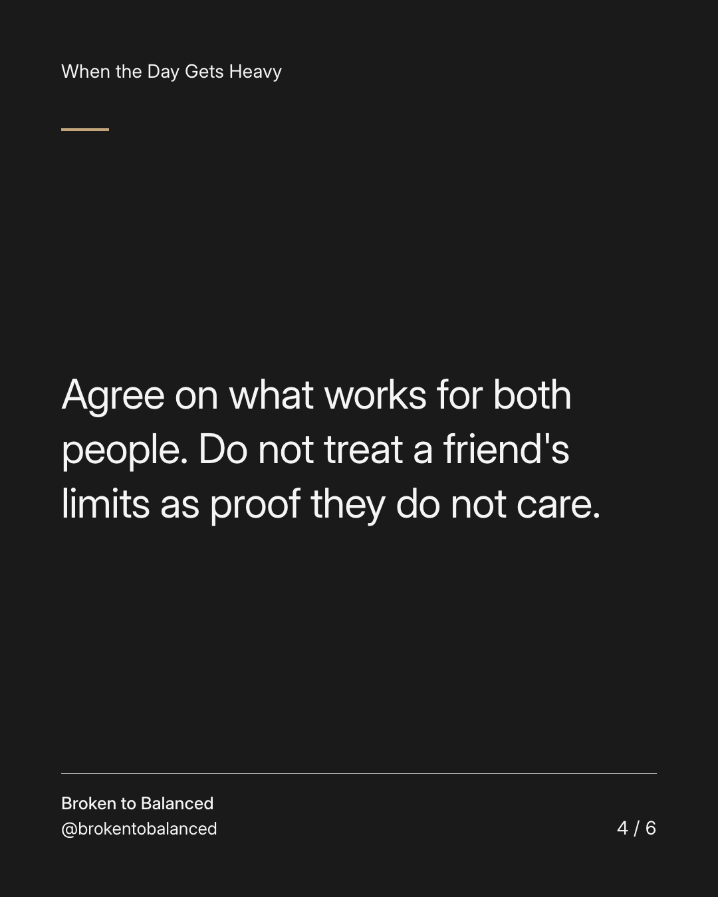
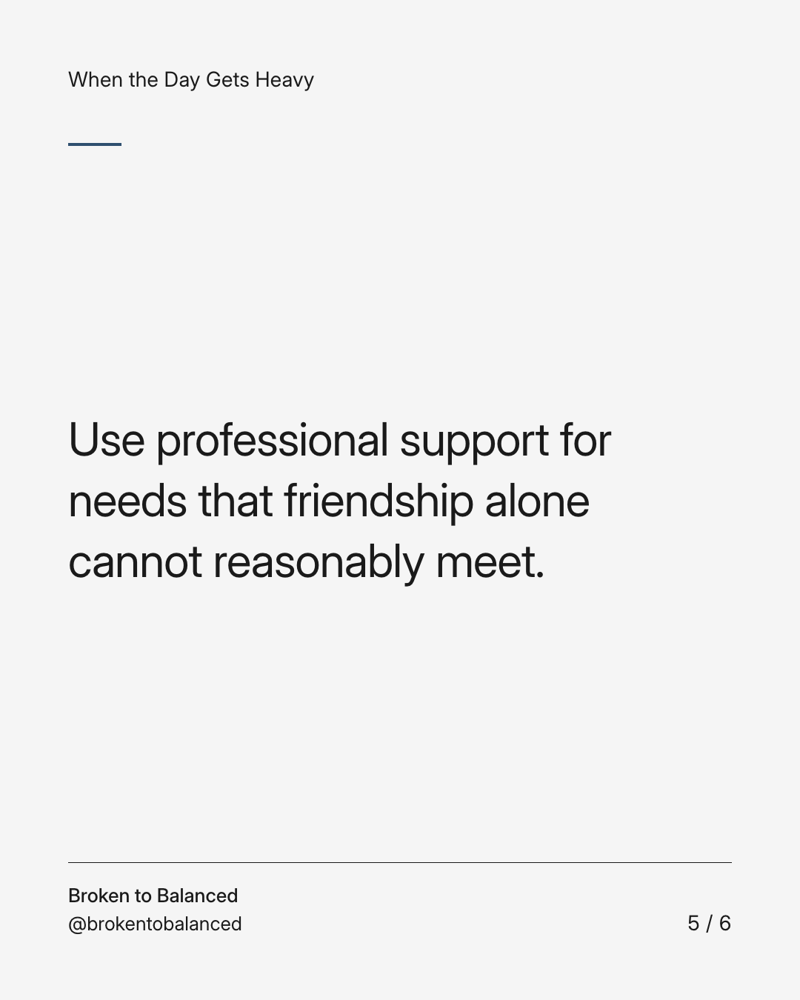
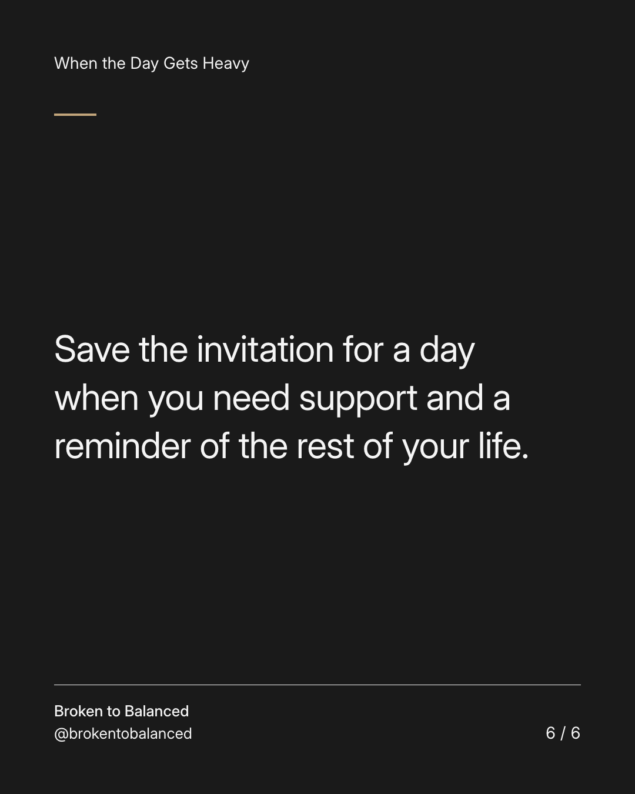

Exact text and accessibility text
A support conversation can include something besides the crisis.
Slide 1 of 6. A support conversation can include something besides the crisis.


Exact text and accessibility text
You may need to discuss the difficult situation. You may also miss being known for anything else.
Slide 2 of 6. You may need to discuss the difficult situation. You may also miss being known for anything else.


Exact text and accessibility text
Try: “Could we talk about this for a little while, then do something ordinary together?”
Slide 3 of 6. Try: “Could we talk about this for a little while, then do something ordinary together?”


Exact text and accessibility text
Agree on what works for both people. Do not treat a friend's limits as proof they do not care.
Slide 4 of 6. Agree on what works for both people. Do not treat a friend's limits as proof they do not care.


Exact text and accessibility text
Use professional support for needs that friendship alone cannot reasonably meet.
Slide 5 of 6. Use professional support for needs that friendship alone cannot reasonably meet.


Exact text and accessibility text
Save the invitation for a day when you need support and a reminder of the rest of your life.
Slide 6 of 6. Save the invitation for a day when you need support and a reminder of the rest of your life.
Exact caption
Plain-text fallback: select and copy the caption.